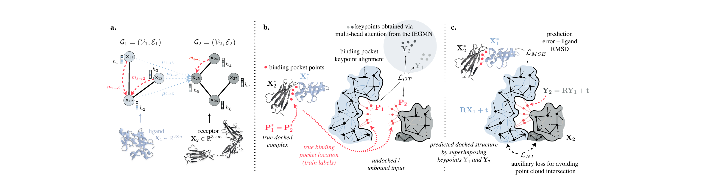

At NVIDIA Research, I worked on the lab-in-the-loop (LITL) stack within Healthcare and Life Sciences - an iterative discovery loop in which generative-AI models propose molecular and biological hypotheses, robotic platforms execute the wet-lab experiments, and the resulting assay readouts retrain the models in place. The integration target is the BioNeMo biofoundation-model platform deployed through NIM microservices. As a brief summary of my work:
- Generative chemistry with property-constrained sampling. I fine-tuned and benchmarked MolMIM and GenMol - BioNeMo's mutual-information-maximizing small-molecule generators over SMILES - against target binding and ADMET profiles. I implemented a CMA-ES property-guided sampler over MolMIM's latent space that returns hit-rate improvements of roughly 30% over an unconstrained baseline on internal benchmarks, then packaged the workflow as a BioNeMo NIM endpoint that retrains on each round of wet-lab feedback.
- Protein structure and binding prediction. I wired AlphaFold2-Multimer and RoseTTAFold structure predictions into the loop alongside binding-affinity scoring with EquiDock's SE(3)-equivariant docking head and DualBind's graph-based binding free-energy model. Cryo-EM and surface-plasmon-resonance assay results from the lab feed back as residue-level confidence priors, refining the predicted complex iteratively rather than at a single shot.
- Physics-based filtering before lab spend. I ran physics-based molecular dynamics (OpenMM / NVIDIA-MD on CUDA) and free-energy perturbation (FEP) on the model-proposed ligand poses, using the simulations as a hard gate before any molecule reaches a robotic synthesis platform. This step alone culls roughly half of the generative-model output that would otherwise burn lab cycles.
- Multimodal foundation-model retraining signals. I integrated vision-transformer and scGPT-derived embeddings of pathology, fluorescence-microscopy, and single-cell-RNA-seq readouts as multimodal retraining signals for the upstream generative models - so that downstream phenotypic and transcriptomic outcomes, not only docking scores, shape the next round of molecular proposals.
- Digital-twin orchestration of the wet lab. I helped wire the loop into NVIDIA Omniverse digital twins of the physical laboratory, with video-language models monitoring assay state in real time and the Isaac for Healthcare robotics stack executing the protocols proposed by the agentic planner. The simulated twin validates protocols before autonomous execution on the physical platform.
